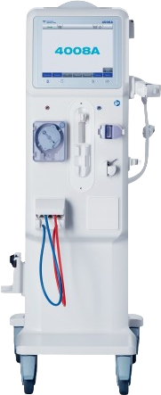
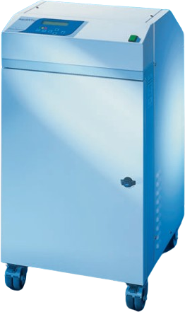
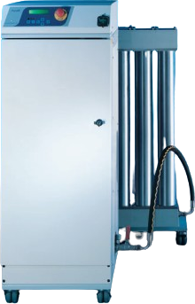
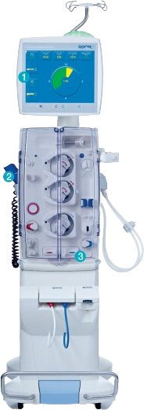
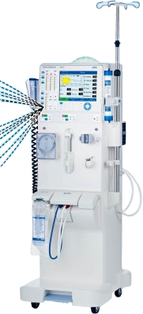
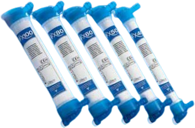
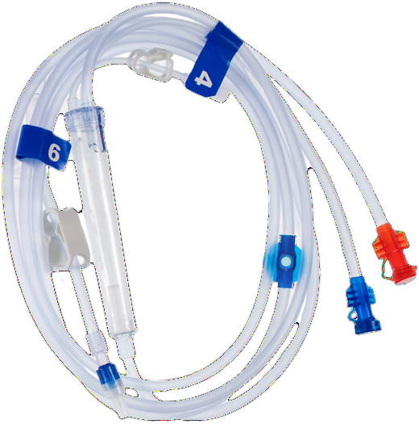
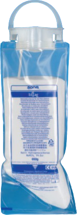
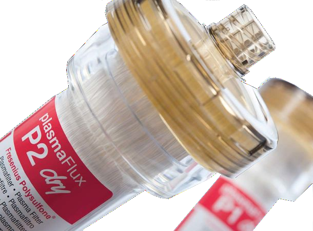

Fresenius Medical Care, the world’s largest provider of dialysis products and services, has introduced the 4008A dialysis machine, designed specifically to address the needs of emerging markets.
Fresenius Medical Care, the world's leading provider of dialysis products and services, has introduced the 4008A dialysis machine, tailored specifically to meet the demands of emerging markets. With this launch, the company aims to enhance access to life-saving dialysis treatments for patients suffering from end-stage renal disease (ESRD) in these regions. The 4008A machine upholds Fresenius Medical Care's high standards of therapy while reducing costs for healthcare systems. Initially, the 4008A has been rolled out in India, with plans to expand to other countries across the Asia-Pacific region.
Enquire now
Compact Water Treatment System for Safe Dialysis Operations

Central Reverse Osmosis Water Treatment System for Safe Dialysis Operations
The Aqua-B is a single-pass reverse osmosis unit specifically designed to meet the quality standards and requirements of a modern dialysis center.

As the number of patients requiring hemodialysis continues to rise, including an increasing proportion of medically complex cases, healthcare systems face challenges due to limited financial and human resources.

High-Quality Treatment Within Your Budget
The 4008S Next Generation is designed to deliver safety and efficiency across all essential treatment modalities in renal replacement therapies.

A completely new approach to dialyzers has enhanced the performance profile of the FX-class dialyzers through technical advancements in every component, including the Helixone® membrane.

Fresenius Medical Care bloodlines offer significant benefits for both healthcare professionals and patients.

To prevent the risk of microbiological contamination associated with liquid bicarbonate concentrates, the bicarbonate buffer is provided as a dry substance.

Features a two-layer membrane structure and a modelled membrane topology.
Dry delivery simplifies setup and reduces the rinsing time.